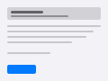

Voice input that lives in your menu bar. Hold a key, speak naturally — polished text appears at your cursor, entirely on-device.

Press and hold your configured key — fn, ⌃, ⇧, or ⌥. Recording starts instantly.
Talk like you would to a person. Audio never leaves your Mac.
Let go. Polished text appears at your cursor, in any app.
WhisperKit transcribes locally. MLX-Qwen refines locally. Audio is never uploaded, never stored.
Runs on macOS 26+ · Apple Silicon only · MIT licensed
xattr -cr /Applications/OpenType.app
copy
Run once if macOS shows a Gatekeeper prompt.
Works with OpenAI, Claude, Gemini, OpenRouter, SiliconFlow, Doubao, Bailian, MiniMax — or any OpenAI-compatible endpoint.